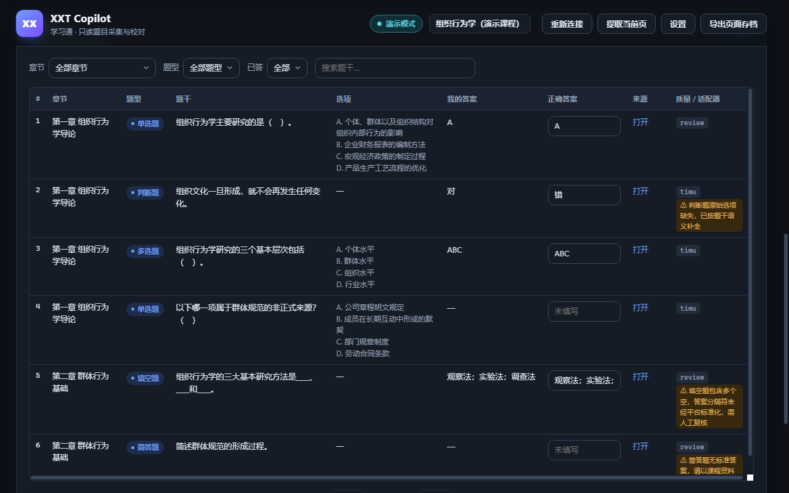
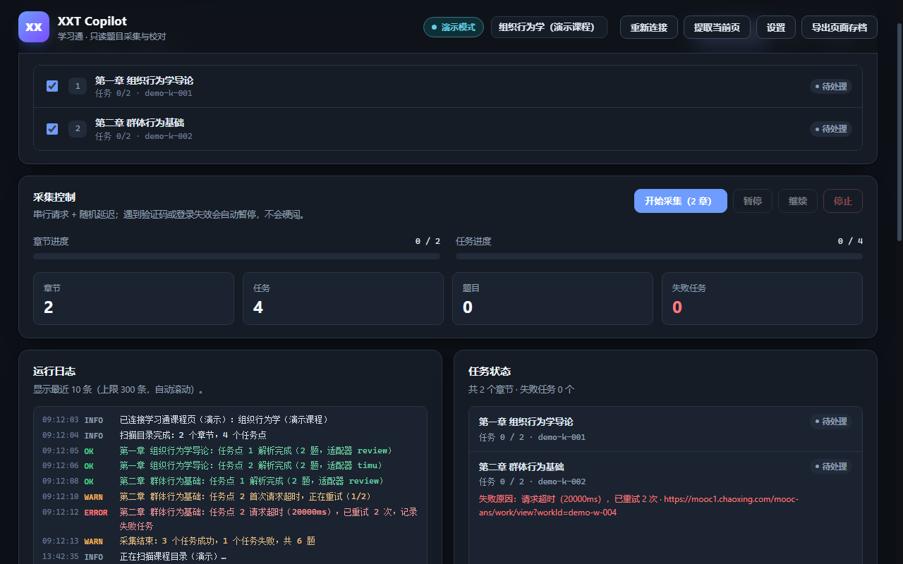
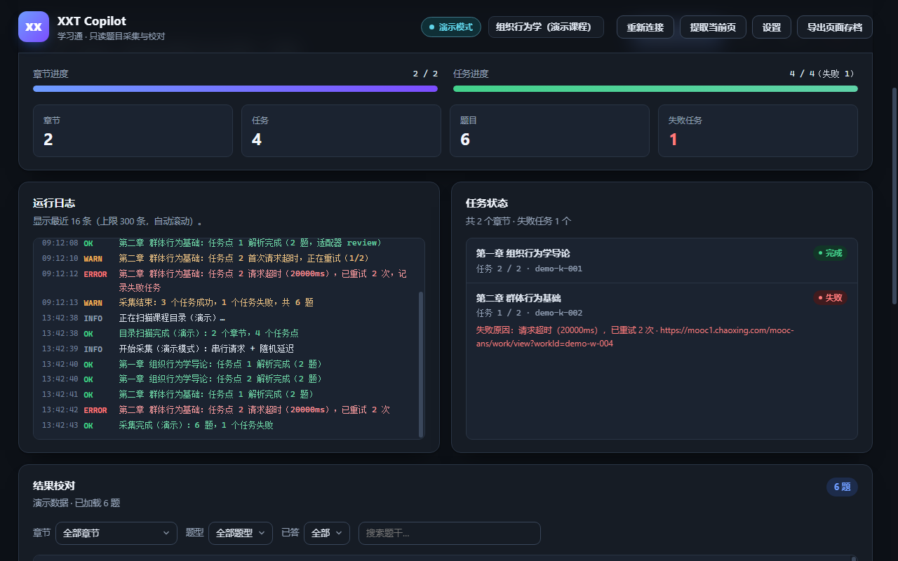

只读采集 · 按章节整理 · 本地校对导出。不自动答题，不自动提交，页面内容只在本机处理，不上传任何服务器。
当前版本 v0.1.5 · 免费 · 开源可查 · 支持 Manifest V3

从课程目录到复习资料，全程串行、限速、可暂停；失败任务会记录原因，不再静默漏题。

目录扫描按章勾选，只采集你需要的范围

采集进度统计、日志、失败原因一目了然
结果校对筛选、搜索、逐题校对并导出
只读取你已经能访问的页面，把整理、校对、导出这些重复劳动交给工具。
扫描课程目录，识别章节任务点，按章节串行采集章节测验与作业。
支持全选、取消选择或单独勾选；开始采集时只处理你选中的章节。
串行请求 + 随机延迟 + 超时重试；遇到验证码或登录失效会暂停提示，由你手动处理。
表格里筛选、搜索、修改答案，直接编辑并自动保存，导出前完成校对。
Markdown（含/不含答案）、JSON、CSV、A4 打印视图，方便背诵、备份或打印成 PDF。
每个失败任务记录原因与源 URL；可导出页面存档，方便定位解析问题。
登录学习通，打开要整理的课程，进入任意章节页面并保持标签页打开。
点击扩展图标打开控制台，扫描课程目录，按章勾选需要整理的范围。
开始采集，结束后在表格里校对答案，选择 Markdown / JSON / CSV / 打印视图导出。
XXT Copilot 的定位是“只读采集 + 本地整理”。它复用你浏览器里已有的登录态，只读取你已经能访问的页面内容，然后把页面里已经展示的题目与解析整理到本地。
没有服务器、没有账号体系、没有遥测和广告；所有数据都在你的电脑上处理，导出文件只保存到你自己的下载目录。
Edge / Chrome 用户都可从对应商店一键安装；其他情况可使用 GitHub 安装包。
xxt-copilot-0.1.5.zip 到固定目录。edge://extensions（Chrome 为 chrome://extensions）。manifest.json 的那一层文件夹。不会。扩展只读取页面和接口数据，在本地整理；从不点击提交、交卷、保存作业等按钮，也不会修改平台上的任何数据。
为了降低平台压力和账号风险，扩展采用串行请求、随机延迟、超时与有限重试。整门课可能需要几分钟，建议保持默认限速。
扩展会暂停并提示原因，不会强行继续。手动完成验证或重新登录学习通后，刷新课程页并在控制台点“继续”或“重新连接”。
平台只在部分页面或部分状态下展示官方答案；页面上没有展示的答案无法采集，会留空，由你在校对区手动补充。
不会。扩展没有服务器，没有遥测和广告；采集结果保存在页面内存，设置保存在浏览器本地存储，导出文件只写到你的默认下载目录。
没有。这是一个独立的个人开发工具，与超星、学习通、泛雅及各学校无隶属或合作关系。请遵守平台用户协议与学校规定，仅用于个人复习整理。